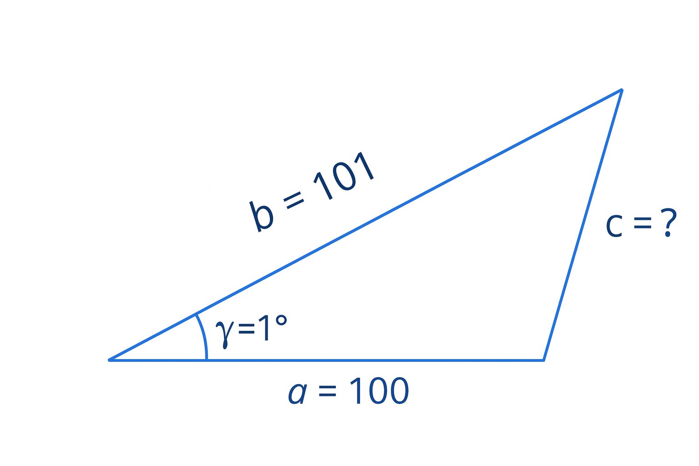
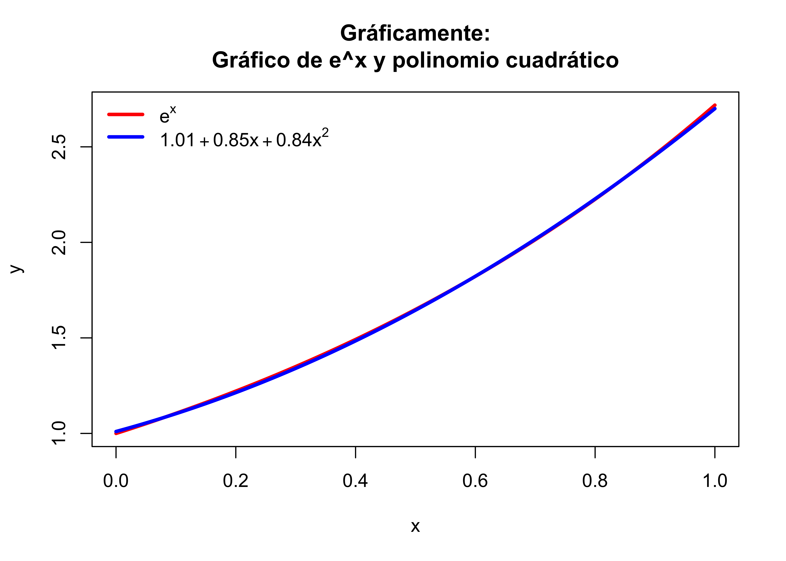

Código
area.triangulo <- function(base,altura) {
area <- (base*altura)/2
return(area)
}
area.triangulo(2,5)- 1
- Comunmente usamos el punto para separar las palabras en el nombre de las variables
[1] 5A continuación un ejemplo de una función en R
area.triangulo <- function(base,altura) {
area <- (base*altura)/2
return(area)
}
area.triangulo(2,5)[1] 5encuentra.cero.f <- function(v) {
s <- -1
for(i in 1:length(v)) {
if((v[i]==0) && (s == -1)) {
s<-i
}
}
if (s != -1) {
return(s)
}
else {
return("¡El vector no tiene ningún cero!")
}
}
vec<-c(4,-7,2,1,9)
encuentra.cero.f(vec)[1] "¡El vector no tiene ningún cero!"La siguiente función calcula la suma del valor absoluto de las entradas de un vector, es de decir, la norma 1 del vector dada por
|v[1]|+|v[2]|+\ldots+|v[n]|
norma1 <- function(v) {
suma <- 0
i = 1
while (i <= length(v)) {
suma <- suma + abs(v[i])
i <- i + 1
}
return(suma)
}
vec0<-c(4,-7,2,1)
norma1(vec0)[1] 14Un número real x está en forma punto flotante si se escribe de la forma
0.d_1 d_2 \cdots d_k \times 10^{n},
donde 0 \le d_i \le 9, d_1 \ne 0, i = 1,2,\ldots,k.
\pi = 0.31415 \times 10^{1}.
Por lo tanto, quedan dos posibilidades:
\pi = 3.14159265\cdots, \quad \text{con } k = 5 \text{ tenemos:}
fl(\pi) = 0.31415 \times 10^{1} \quad (\textbf{Cortando})
fl(\pi) = 0.31416 \times 10^{1} \quad (\textbf{Redondeando})
El error que resulta de reemplazar x por fl(x) se denomina Error de Redondeo.
Si P^* es una aproximación de P se llama:
\text{Error absoluto} \;=\; |P - P^*|
\text{Error relativo} \;=\; \frac{|P - P^*|}{|P|}, \quad \text{para } P \neq 0
Sea x \in \mathbb{R}, x \neq 0, entonces:
\left| \frac{x - fl(x)}{x} \right| \leq 10^{-k+1}.
\left| \frac{x - fl(x)}{x} \right| \leq 0.5 \times 10^{-k+1} \;=\; 5 \times 10^{-k}.
Si P = 0.3000 \times 10^{1} y P^* = 0.3100 \times 10^{1} entonces:
|P - P^*| = 0.1 \times 10^{0}, \qquad \frac{|P - P^*|}{|P|} = 0.33 \times 10^{-1}
Pero si P = 0.3000 \times 10^{4} y P^* = 0.3100 \times 10^{4} entonces:
|P - P^*| = 0.1 \times 10^{3}, \qquad \frac{|P - P^*|}{|P|} = 0.33 \times 10^{-1}
1.
\begin{align*} \left| \frac{x - fl(x)}{x} \right| &= \left| \frac{0.d_1 d_2 \cdots \times 10^n - 0.d_1 d_2 \cdots d_k \times 10^n}{0.d_1 d_2 \cdots \times 10^n} \right| \\[1ex] &= \left| \frac{0.d_{k+1} d_{k+2} \cdots \times 10^{n-k}}{0.d_1 d_2 \cdots \times 10^n} \right| \\[1ex] &= \left| \frac{0.d_{k+1} d_{k+2} \cdots}{0.d_1 d_2 \cdots} \right| \times 10^{-k} \\[1ex] &\le \frac{1}{0.1} \times 10^{-k} \\[1ex] &= 10^{-k+1}. \end{align*}
2. Ejercicio: por casos
Se dice que un número P^* aproxima a P con t dígitos significativos si t \in \mathbb{N} es el número más grande tal que:
\frac{|P - P^*|}{|P|} < 5 \times 10^{-t} \;=\; 0.5 \times 10^{-t+1}.
x \;=\; \pi \;=\; 0.\underbrace{3141}_{\text{4 dígitos}}59265 \cdots \times 10^{1}.
x^* \;=\; \frac{22}{7} \;=\; 0.\underbrace{3142}_{\text{dígitos distintos}}8517 \times 10^{1}.
\frac{|x - x^*|}{|x|} = 0.402 \times 10^{-3} < 0.5 \times 10^{-4+1}.
Por lo que x^* aproxima x con 4 dígitos significativos.
¿Qué valores puede tomar x^* para aproximar 1000 con 4 dígitos significativos?
x = 1000 = 0.1000 \times 10^{4}, \quad \text{luego tenemos que:}
\left| \frac{x^* - 1000}{1000} \right| < 5 \times 10^{-4} \;\;\;\;\;\;\;\; \Rightarrow \;\;\;\;\;\;\;\; -5 \times 10^{-4} < \frac{x^* - 1000}{1000} < 5 \times 10^{-4},
\Rightarrow \;\; 999.5 < x^* < 1000.5.
Note que x^* = 0.9996 \times 10^{3} aproxima a x con 4 dígitos significativos,
pero y = 0.1001 \times 10^{4} no aproxima a x con 4 dígitos significativos.
División:
Si x \cong x + \varepsilon y se divide entre \delta muy pequeño se tiene:
\frac{x}{\delta} \cong \frac{x + \varepsilon}{\delta} = \frac{x}{\delta} + \underbrace{\frac{\varepsilon}{\delta}}_{(*)} (*): Nuevo error enorme
Resta de dos números casi iguales:
\begin{align*} fl(x) \; &= \; 0.d_1 d_2 \cdots d_p \alpha_{p+1} \alpha_{p+2} \cdots \alpha_k \times 10^n\\ fl(y) \; &= \; 0.d_1 d_2 \cdots d_p \beta_{p+1} \beta_{p+2} \cdots \beta_k \times 10^n\\ x - y \; &\cong \; fl(x) - fl(y) \;=\; 0.\underbrace{\gamma_{p+1}\gamma_{p+2}\cdots\gamma_k}_{(**)} \times 10^{n-p} \end{align*}
(**): Podría ser basura.
\begin{align*} \Delta_x \;&=\; |x - x^*|.\\ \delta_x \;&=\; \frac{|x - x^*|}{|x|} \;=\; \frac{\Delta_x}{|x|}. \end{align*}
Si x = x_1 + x_2 + \cdots + x_n y x^* = x_1^* + x_2^* + \cdots + x_n^* con x_i \geq 0 entonces:
\begin{align*} \Delta_x \;&\leq\; \sum_{i=1}^n \Delta_{x_i}. \\ \delta_x \;&\leq\; \max\{\delta_{x_1}, \delta_{x_2}, \ldots, \delta_{x_n}\}. \end{align*}
\begin{align*} \Delta_x &= |x - x^*| = \left| \sum_{i=1}^n x_i - \sum_{i=1}^n x_i^* \right| \leq \sum_{i=1}^n |x_i - x_i^*| = \sum_{i=1}^n \Delta_{x_i}. \end{align*}
\begin{align*} \text{Sabemos que } \quad \delta_x &= \frac{\Delta_x}{|x|} \leq \frac{\Delta_{x_1} + \Delta_{x_2} + \cdots + \Delta_{x_n}} {|x_1 + x_2 + \cdots + x_n|},\\[1ex] \delta_{x_i} &= \frac{\Delta_{x_i}}{|x_i|} \;\Rightarrow\; \Delta_{x_i} = \delta_{x_i}\,|x_i|,\\[2ex] \Rightarrow \quad \delta_x &\leq \frac{|x_1|\delta_{x_1} + |x_2|\delta_{x_2} + \cdots + |x_n|\delta_{x_n}} {|x_1 + x_2 + \cdots + x_n|}\\[2ex] &\leq \frac{\max\{\delta_{x_1}, \delta_{x_2}, \ldots, \delta_{x_n}\}\, (|x_1| + |x_2| + \cdots + |x_n|)} {|x_1 + x_2 + \cdots + x_n|}\\[2ex] &\leq \max\{\delta_{x_1}, \delta_{x_2}, \ldots, \delta_{x_n}\}, \qquad \text{pues } x_i \ge 0 \ \forall i . \end{align*}
Se debe evitar la pérdida de dígitos significativos:
Por ejemplo, al evaluar:
f(x) = 1 - \cos(x),
con x cercano a 0 se producirá una pérdida de dígitos significativos.
Esto se puede evitar racionalizando, como sigue:
f(x) = 1 - \cos(x) \;=\; \frac{\sin^{2}(x)}{1 + \cos(x)}.
Un algoritmo es un procedimiento que describe, sin ninguna ambigüedad, una sucesión finita de pasos a realizar en orden específico, con el propósito de resolver un problema.
Características:
Para representar las instrucciones utilizaremos pseudocódigo.
Para calcular
\sum_{k=a}^{\infty} f(x,k)
tenemos:
Entrada: \varepsilon, f, a, x.
Salida: Valor aproximado de
\sum_{k=a}^{\infty} f(x,k).
k <- a
s <- 0
T <- f(x,k)
while |T| < ε do
s <- s + t
t <- t * (f(x,k+1) / f(x,k))
k <- k + 1
end while
return sUn algoritmo se dice estable si pequeños cambios en la entrada producen pequeños cambios en la salida.
En caso contrario, es decir, pequeños cambios en la entrada producen grandes cambios en la salida, entonces el algoritmo se dice inestable (caótico).
\begin{align*} E \;&=\; \text{Error inicial.}\\ E_n \;&=\; \text{Error luego de $n$ pasos.} \end{align*}
Si
|E_n| = CnE,
con C constante, entonces el crecimiento del error es lineal.
Si
|E_n| = K^n E, \quad K > 1,
entonces el crecimiento del error es exponencial.
Sea \{ \alpha_n \}_{n \in \mathbb{N}} una sucesión que converge a \alpha, se dice que \{ \alpha_n \}_{n \in \mathbb{N}} converge con una rapidez \mathcal{O}(\beta_n), donde \{ \beta_n \}_{n \in \mathbb{N}} es otra sucesión (\beta_n \neq 0 \ \forall n) si:
\frac{|\alpha_n - \alpha|}{|\beta_n|} < K
para n suficientemente grande y K constante que no depende de n.
\alpha_n = \alpha + \mathcal{O}(\beta_n).
\alpha_n \;\to\; \alpha \;\;\; \text{con rapidez } \mathcal{O}(\beta_n).
\frac{|\alpha_n - \alpha|}{|\beta_n|} < K \;\;\;\Longleftrightarrow\;\;\; - K \beta_n + \alpha < \alpha_n < K \beta_n + \alpha.
Si \alpha_n = \dfrac{n+3}{n^3}, entonces
\alpha_n = 0 + \mathcal{O}\!\left(\frac{1}{n^2}\right)
pues:
\left| \frac{\alpha_n - \alpha}{\beta_n} \right| = \left| \frac{\tfrac{n+3}{n^3} - 0}{\tfrac{1}{n^2}} \right| = \left| \frac{n^3 + 3n^2}{n^3} \right| = \left| 1 + \frac{3}{n} \right| \leq 4, \quad \text{si } n \to \infty.
Es decir, \dfrac{n+3}{n^3} converge a 0 tan rápido como \dfrac{1}{n^2} converge a 0.
Si
\alpha_n = \frac{\sin(n)}{n},
entonces
\alpha_n = 0 + \mathcal{O}\!\left(\frac{1}{n}\right), \quad \text{cuando } n \to \infty.
1. \texttt{For[i=1, i++, i<=N, \dots]}
tiene una velocidad de convergencia \mathcal{O}(N).
2. \texttt{For[i=1, i++, i<=N,} \quad
\quad\texttt{For[j=1, j++, j<=M, \dots]]}
tiene una velocidad de convergencia \mathcal{O}(N^2).
3. \texttt{For[i=1, i++, i<=N,} \quad
\qquad\texttt{For[j=1, j++, j<=M,} \quad
\qquad\qquad\texttt{For[k=1, k++, k<=L, \dots]]]}
tiene una velocidad de convergencia \mathcal{O}(N^3).
Existen dos tipos de error: El error en los datos y el error computacional

Sea a \in \mathbb{R} y sea \hat{a} una aproximación de a y f una función o procedimiento,
entonces
f(\hat{a}) - f(a)
se llama propagación del error o error propagado.
Esto se ilustra en el siguiente gráfico
AGRAGAR GRAFICO ANDREY
Suponga que se desea calcular c en el siguiente triángulo:

Supongamos que a tiene un error y usamos 100.1.
Entonces el error se propaga como se muestra en la siguiente tabla:
| Expresión | Exacto | Aproximado | Error relativo |
|---|---|---|---|
| a | 100 | 100.1 | 0.1 \,\% |
| b-a | 1 | 0.9 | -10 \,\% |
| (b-a)^2 | 1 | 0.81 | -19 \,\% |
| 4ab \sin^2\!\left(\tfrac{\gamma}{2}\right) | 3.0765\ldots | 3.0796\ldots | 0.1 \,\% |
| (b-a)^2 + 4ab \sin^2\!\left(\tfrac{\gamma}{2}\right) | 4.0765\ldots | 3.8896\ldots | -4.6 \,\% |
| c | 2.0190\ldots | 1.9722\ldots | -2.3 \,\% |
| Error relativo inicial: | 0.1 \,\% | Error relativo final: | -2.3 \,\% |
Suponga que se desea calcular
z = 1.000 - \frac{1.208}{x}
en una computadora que solamente utiliza 4 dígitos, con x = 1.209.
Algoritmo 1.
Calcule primero y := \dfrac{1.208}{x} y luego z := 1.000 - y

Algoritmo 2.
Calcule primero y := x - 1.208 y luego z := \dfrac{y}{x}

Si es posible, evite operaciones sensibles con operandos contaminados por la propagación del error.
Usualmente, para calcular las raíces de una ecuación cuadrática se usa:
x_{1,2} = \frac{-b \pm \sqrt{b^2 - 4ac}}{2a},
pero si b > 0 es mejor usar:
x_1 = \frac{-2c}{-b - \sqrt{b^2 - 4ac}},
y si b < 0 es mejor usar:
x_2 = \frac{2c}{-b + \sqrt{b^2 - 4ac}}.
Otros ejemplos que evitan problemas de cancelación cuando x \approx y son:
\begin{align*} x^2 - y^2 \;\;&\longrightarrow\;\; (x-y)(x+y),\\ \cos(x) - 1 \;\;&\longrightarrow\;\; 2 \sin^2\!\left(\tfrac{x}{2}\right), \quad \text{para } x \to 0,\\ \ln(x) - \ln(y) = \ln\!\left(\tfrac{x}{y}\right)&\longrightarrow\; 2 \tanh^{-1}\!\left(\tfrac{x-y}{x+y}\right),\\ e^x - e^y \;\;&\longrightarrow\;\; 2 \sinh\!\left(\tfrac{x-y}{2}\right) e^{\tfrac{x+y}{2}}. \end{align*}
Sea X un espacio vectorial complejo (o real).
Una función \|\cdot\| : X \to \mathbb{R} con las siguientes propiedades:
para todo x, y \in X y para todo \alpha \in \mathbb{C} (o \mathbb{R}),
se llama norma en X.
El espacio vectorial X provisto de una norma se llama espacio normado.
Algunas normas de \mathbb{R}^n y \mathbb{C}^n son:
\|x\|_1 := \sum_{i=1}^n |x_i|, \qquad \|x\|_2 := \left( \sum_{i=1}^n |x_i|^2 \right)^{1/2}, \qquad \|x\|_\infty := \max_{i=1,2,\dots,n} |x_i|,
para x = (x_1, x_2, \dots, x_n)^t.
Las normas anteriores son conocidas como las normas \ell_1, \ell_2 y \ell_\infty respectivamente.
Las tres son casos particulares de la norma \ell_p:
\|x\|_p := \left( \sum_{i=1}^n |x_i|^p \right)^{1/p}, \qquad p \geq 1.
La norma \ell_\infty es el límite de \ell_p cuando p \to \infty.
Para toda norma se tiene la segunda desigualdad triangular:
\big| \|x\| - \|y\| \big| \leq \|x - y\|,
para todo x, y \in X.
De la desigualdad triangular se tiene que
\|x\| = \|x - y + y\| \leq \|x - y\| + \|y\|,
por lo tanto
\|x\| - \|y\| \leq \|x - y\|.
Análogamente, cambiando el rol de x y y, se obtiene
\|y\| - \|x\| \leq \|y - x\|,
y por lo tanto se cumple la desigualdad.
Para dos elementos x,y en un espacio normado X la norma \|x-y\| se llama distancia entre x y y.
Una sucesión (x_n) de elementos en un espacio normado X se llama convergente si existe un elemento x \in X tal que:
\lim_{n \to \infty} \|x_n - x\| = 0,
es decir, para todo \varepsilon > 0 existe un entero N(\varepsilon) tal que \|x_n - x\| < \varepsilon para todo n > N(\varepsilon).
El elemento x es llamado el límite de la sucesión (x_n) y se escribe:
\lim_{n \to \infty} x_n = x.
Si una sucesión no converge se llama divergente.
El límite de una sucesión convergente es único.
(Ejercicio) \blacksquare
Dos normas en un espacio vectorial se llaman equivalentes si tienen el mismo conjunto de sucesiones convergentes.
Dos normas \|\cdot\|_{a} y \|\cdot\|_{b} en un espacio vectorial X son equivalentes si y solamente si existen números positivos c y C tal que: c \|x\|_{a} \;\leq\; \|x\|_{b} \;\leq\; C \|x\|_{a}, \quad \forall x \in X.
Sean las normas \|\cdot\|_{a} y \|\cdot\|_{b} equivalentes. Suponga que no existe C>0 tal que \|x\|_{b} \leq C \|x\|_{a} para todo x \in X, entonces existe una sucesión (x_{n}) con \|x_{n}\|_{a} = 1 y \|x_{n}\|_{b} \geq n^{2}.
Luego la sucesión y_{n} := x_{n}/n converge a cero con respecto a \|\cdot\|_{a} pero no con respecto a \|\cdot\|_{b}, porque \|y_{n}\|_{b} \geq n.
Recíprocamente, si se tiene (2), entonces si \|x_{n}-x\|_{a}\to 0 es claro que \|x_{n}-x\|_{b}\to 0 y viceversa.
\blacksquare
En un espacio vectorial de dimensión finita todas las normas son equivalentes.
Ejercicio. \blacksquare
Un subconjunto U de un espacio normado se llama cerrado si este contiene el límite de todas las sucesiones convergentes de U.
La clausura \overline{U} de un conjunto U de un espacio normado X es el conjunto de todos los límites de sucesiones convergentes de U.
Un subconjunto U de X se llama abierto si su complemento X \setminus U es cerrado.
Un conjunto U se llama denso en otro conjunto V si V \subset \overline{U}, es decir, si cada elemento de V es el límite de una sucesión convergente de U.
Para cada x_{0} \in X y r > 0 el conjunto
B[x_{0}, r] := \{x \in X \;:\; \|x - x_{0}\| \leq r\}
es cerrado y se llama la bola cerrada de radio r y centro x_{0}.
El conjunto
B(x_{0}, r) := \{x \in X \;:\; \|x - x_{0}\| < r\}
es abierto y se llama la bola abierta de radio r y centro x_{0}.
Cerrado. [0,1] \subset \mathbb{R} es cerrado: toda sucesión convergente de puntos en [0,1] converge a un punto en [0,1].
Clausura. Si U = ]0,1[, entonces \overline{U} = [0,1].
Si U = \mathbb{Q}, entonces \overline{U} = \mathbb{R}.
Abierto. ]0,1[ \subset \mathbb{R} es abierto porque su complemento es
\mathbb{R} \setminus ]0,1[ = ]-\infty,0] \cup [1,\infty[.
Denso en V. \mathbb{Q} es denso en \mathbb{R} (\overline{\mathbb{Q}} = \mathbb{R}).
También ]0,1[ es denso en [0,1] pues \overline{]0,1[} = [0,1].
Bolas (norma usual).
En \mathbb{R}, con x_0 = 2, r = 3:
B[2,3] = \{ x \in \mathbb{R} : |x-2| \leq 3 \} = [-1,5],
B(2,3) = \{ x \in \mathbb{R} : |x-2| < 3 \} = ]-1,5[.
En \mathbb{R}^2, con x_0 = (1,2), r = 2:
B[(1,2),2] = \{ (x,y) \in \mathbb{R}^2 : \sqrt{(x-1)^2+(y-2)^2} \leq 2 \},
B((1,2),2] = \{ (x,y) \in \mathbb{R}^2 : \sqrt{(x-1)^2+(y-2)^2} < 2 \}.
Un conjunto U se llama acotado si existe un número positivo C tal que
\|x\| < C \quad \text{para todo } x \in U.
Toda sucesión acotada en un espacio normado de dimensión finita X contiene una subsucesión convergente.
Sea u_{1}, u_{2}, \ldots, u_{n} una base de X y sea (x_{\nu}) una sucesión acotada. Entonces se puede escribir: x_{\nu} = \sum_{j=1}^{n} \alpha_{j\nu} u_{j}.
Como x_{\nu} es una sucesión acotada y usando la norma \|x_{\nu}\|_{\infty B} := \max_{j=1,2,\ldots,n} |\alpha_{j\nu}|, se tiene que cada una de las sucesiones (\alpha_{j\nu}) es acotada en \mathbb{C} para cada j=1,2,\ldots,n.
Por lo tanto, usando el teorema de Bolzano–Weierstrass se puede seleccionar una subsucesión \alpha_{j\nu(\ell)} \to \alpha_{j} cuando \ell \to \infty para cada j=1,2,\ldots,n.
Esto implica que: x_{\nu(\ell)} \to \sum_{j=1}^{n} \alpha_{j} u_{j} \in X, \quad \text{cuando } \ell \to \infty. \blacksquare
Sea X un espacio vectorial complejo (o real).
Una función \langle \cdot,\cdot \rangle : X \times X \to \mathbb{C} (o \mathbb{R}) con las siguientes propiedades:
se llama producto interno en X.
Un espacio vectorial X provisto de un producto interno se llama espacio pre-Hilbert.
Una consecuencia inmediata de 3. y 4. es la antilinealidad: \langle x, \alpha y + \beta z \rangle = \overline{\alpha} \langle x, y \rangle + \overline{\beta} \langle x, z \rangle.
Un ejemplo de producto interno en \mathbb{C}^n (o \mathbb{R}^n) está dado por: \langle x, y \rangle := \sum_{i=1}^{n} x_i \overline{y_i}, donde x := (x_1, x_2, \ldots, x_n)^t y y := (y_1, y_2, \ldots, y_n)^t.
Para todo producto interno se tiene la desigualdad de Cauchy–Schwarz: |\langle x, y \rangle|^2 \leq \langle x, x \rangle \langle y, y \rangle, para todo x, y \in X. Además se tiene igualdad si para todo x, y son linealmente dependientes.
Si x = 0 la desigualdad es trivial.
Si x \neq 0, tome
z = y - \frac{\langle y, x \rangle}{\|x\|^2}x,
luego es claro que \langle z, x \rangle = 0 y que:
0 \leq \|z\|^2
= \left\langle y - \frac{\langle y, x \rangle}{\|x\|^2}x , \; y - \frac{\langle y, x \rangle}{\|x\|^2}x \right\rangle
= \langle y, y \rangle - \frac{\langle y, x \rangle \langle x, y \rangle}{\|x\|^2}
= \|y\|^2 - \frac{|\langle x, y \rangle|^2}{\|x\|^2},
de donde se tiene la desigualdad. Además se tiene igualdad si para todo x, y son linealmente dependientes (ejercicio). \blacksquare
Sea X un espacio vectorial complejo (o real).
Entonces la función:
\|x\| := \langle x, x \rangle^{1/2}
define una norma en X, es decir, un espacio pre–Hilbert es siempre un espacio normado.
Ejercicio (use la desigualdad de Cauchy–Schwarz para probar la desigualdad triangular).
\blacksquare
Dos elementos x y y de un espacio pre–Hilbert se llaman ortogonales si: \langle x, y \rangle = 0.
Dos subconjuntos U y V se llaman ortogonales si \langle u, v \rangle = 0 para todo u \in U y v \in V.
Si dos elementos son ortogonales se denota x \perp y y si dos conjuntos son ortogonales se denota U \perp V.
Un subconjunto U \subseteq X se llama un sistema ortogonal si \langle x, y \rangle = 0 para todo x, y \in U con x \neq y.
Un sistema ortogonal U de X se llama ortonormal si \|x\| = 1 para todo x \in U.
Los elementos de un sistema ortogonal son linealmente independientes.
Sea \{q_{1},q_{2},\ldots,q_{n}\} un sistema ortogonal.
Si
\sum_{k=1}^{n} \alpha_{k} q_{k} = 0,
y se multiplica a ambos lados por q_{j}, es inmediato que \alpha_{j} = 0 para todo j=1,2,\ldots,n.
\blacksquare
Sea \{u_{0},u_{1},\ldots\} un conjunto finito o numerable de elementos linealmente independientes de un espacio de pre–Hilbert.
Entonces existe un sistema ortogonal único \{q_{0},q_{1},\ldots\} de la forma:
q_{n} = u_{n} + r_{n}, \quad \text{para } n = 0,1,\ldots, \tag{3}
con r_{0}=0 y r_{n} \in \operatorname{gen}\{u_{0},u_{1},\ldots,u_{n-1}\} para n=1,2,\ldots.
Además se tiene que:
\operatorname{gen}\{u_{0},u_{1},\ldots,u_{n}\} = \operatorname{gen}\{q_{0},q_{1},\ldots,q_{n}\}, \quad \text{para } n=0,1,\ldots \tag{4}
Asumamos que hemos construido elementos de la forma (3) con la propiedad (4) hasta q_{n-1}.
Por la propiedad (4) los elementos \{q_{0},q_{1},\ldots,q_{n-1}\} son linealmente independientes y por lo tanto \|q_{k}\|\neq 0 para k=0,1,\ldots,n-1.
Por lo tanto:
q_{n} = u_{n} - \sum_{k=0}^{n-1}\frac{\langle u_{n},q_{k}\rangle}{\langle q_{k},q_{k}\rangle}q_{k},
está bien definido, y usando la hipótesis de inducción es fácil notar que
\langle q_{n},q_{k}\rangle = 0, \quad \text{para } k=0,1,\ldots,n-1.
Es claro que
r_{n}=\sum_{k=0}^{n-1}\frac{\langle u_{n},q_{k}\rangle}{\langle q_{k},q_{k}\rangle}q_{k} \;\;\in\;\; \operatorname{gen}\{q_{0},q_{1},\ldots,q_{n-1}\} = \operatorname{gen}\{u_{0},u_{1},\ldots,u_{n-1}\}.
La unicidad queda de ejercicio al lector. \blacksquare
Una sucesión de elementos en un espacio normado X se llama sucesión de Cauchy si para todo \varepsilon > 0 existe un N(\varepsilon) \in \mathbb{N} tal que:
\|x_n - x_m\| < \varepsilon,
para todo n, m \geq N(\varepsilon), es decir, si
\lim_{n \to \infty, \; m \to \infty} \|x_n - x_m\| = 0.
Toda sucesión convergente es de Cauchy
Sea x_n \to x cuando n \to \infty. Entonces, para todo \varepsilon > 0 existe un N(\varepsilon) \in \mathbb{N} tal que
\|x_n - x\| < \tfrac{\varepsilon}{2}, \quad \text{para todo } n \geq N(\varepsilon).
Ahora, usando la desigualdad triangular:
\|x_n - x_m\| = \|x_n - x + x - x_m\| \leq \|x_n - x\| + \|x_m - x\| < \varepsilon,
para todo n, m \geq N(\varepsilon). \;\blacksquare
El recíproco del teorema anterior no es válido en general, por esto tiene sentido dar la siguiente definición.
Un subconjunto U de un espacio normado X se llama completo si toda sucesión de Cauchy de elementos de U converge a un elemento en U.
Un espacio normado completo se llama espacio de Banach.
Un espacio pre–Hilbert se llama espacio de Hilbert si este es un espacio completo.
El espacio vectorial C[a,b] provisto con la norma:
\|f\|_\infty := \max_{x \in [a,b]} |f(x)|
es un espacio de Banach.
(Ejercicio) \blacksquare
El espacio vectorial C[a,b] provisto con la norma L_1:
\|f\|_1 := \int_a^b |f(x)| \, dx
NO es un espacio de Banach.
Es evidente que \|f\|_1 es una norma.
Sin pérdida de generalidad se toma [a,b] = [0,2] y se escoge:
f_n(x) := \begin{cases} x^n & \text{si } 0 \leq x \leq 1, \\ 1 & \text{si } 1 < x \leq 2. \end{cases}
Para todo m > n se tiene que:
\| f_n - f_m \|_1 = \int_0^1 \big( x^n - x^m \big) dx = \frac{1}{n+1} + \frac{1}{m+1} \to 0 \quad \text{cuando } n,m \to \infty,
por lo tanto (f_n) es una sucesión de Cauchy.
Ahora, supongamos que la sucesión (f_n) converge a una función continua f con respecto a la norma L_1, es decir:
\| f_n - f \|_1 \to 0 \quad \text{cuando } n \to \infty.
Entonces:
\int_0^1 |f(x)| \, dx \leq \int_0^1 |f(x) - x^n| \, dx + \int_0^1 x^n \, dx \leq \| f - f_n \|_1 + \frac{1}{n+1} \to 0
cuando n \to \infty, de donde f(x) = 0 para 0 \leq x \leq 1.
Además se tiene que
\int_1^2 |f(x)-1| \, dx = \int_1^2 |f(x)-f_n(x)| \, dx \leq \| f - f_n \|_1 \to 0 \quad \text{cuando } n \to \infty,
esto implica que f(x) = 1 para 1 \leq x \leq 2.
Por lo tanto f no es continua, lo cual es una contradicción. \blacksquare
El espacio vectorial C[a,b] provisto con la norma L_2:
\| f \|_2 := \left( \int_a^b |f(x)|^2 \, dx \right)^{1/2}
NO es un espacio de Banach.
Ejercicio (sug. use la misma sucesión del ejemplo anterior). \blacksquare
Todo espacio normado de dimensión finita es un espacio de Banach.
Sea X un espacio normado con base u_1, u_2, \dots, u_n y sea (x_\nu) una sucesión de Cauchy en X.
Se puede escribir:
x_\nu = \sum_{j=1}^n \alpha_{j\nu} u_j
usando el Teorema 1 se tiene que existe un C > 0 tal que:
\max_{j=1,2,\dots,n} |\alpha_{j\nu} - \alpha_{j\mu}| \leq C \, \| x_\nu - x_\mu \|
para todo \nu, \mu \in \mathbb{N}.
Por lo tanto (\alpha_{j\nu}) es una sucesión de Cauchy en \mathbb{C}, entonces existen \alpha_1, \alpha_2, \dots, \alpha_n tales que \alpha_{j\nu} \to \alpha_j cuando \nu \to \infty para cada j = 1,2,\dots,n.
Por lo tanto (x_\nu) converge a:
x_\nu \to x := \sum_{j=1}^n \alpha_j u_j \in X \quad \text{cuando } \nu \to \infty. \blacksquare
Sea U un subconjunto de un espacio normado X.
Un operador (una función) A: U \to X se llama una contracción si existe una constante q \in [0,1[ tal que:
\|Ax - Ay\| \leq q \|x - y\|, \quad \forall\, x,y \in U.
Sea U un subconjunto de un espacio normado X, y sea Y un espacio normado.
\lim\limits_{n \to \infty} Ax_n = Ax.
Toda contracción es un operador continuo.
La prueba es evidente, puesto que si \|x_n - x\| \to 0 cuando n \to \infty entonces
\|Ax_n - Ax\| \to 0 cuando n \to \infty ya que
\|Ax_n - Ax\| \leq q \|x_n - x\| \to 0 \quad \text{cuando } n \to \infty.
\blacksquare
Un operador A : U \to X se llama Lipschitz con constante de Lipschitz L si existe una constante positiva L tal que:
\|Ax - Ay\| \leq L \|x - y\|
para todo x, y \in U.
Es decir, una contracción es un operador Lipschitz con constante menor que uno.
Un operador A : X \to Y donde X y Y son espacios normados se llama lineal si:
A(\alpha x + \beta y) = \alpha Ax + \beta Ay
para todo x, y \in X y \alpha, \beta \in \mathbb{C} (o \mathbb{R}).
Un operador lineal es continuo si y solo si es continuo en un elemento.
Sea A : X \to Y un operador lineal continuo en x_0 \in X.
Entonces, para todo x \in X y para toda sucesión (x_n) \to x cuando n \to \infty, se tiene que:
Ax_n = A(x_n - x + x_0) + A(x - x_0) \;\to\; A(x_0) + A(x - x_0) = Ax, \quad \text{cuando } n \to \infty.
Como x_n - x + x_0 \to x_0, entonces se puede aplicar el límite dentro de la expresión.
\blacksquare
Un elemento x \in X (espacio normado) se llama punto fijo de un operador A : U \subseteq X \to X si: Ax = x.
Toda contracción tiene a lo más un único punto fijo.
Supongamos que x y y son puntos fijos de una contracción A, entonces 0 \neq \|x - y\| = \|Ax - Ay\| \leq q \|x - y\|, lo que implica que q \geq 1, lo cual es una contradicción. \blacksquare
Sea U un subconjunto completo de un espacio normado X y sea A : U \to U una contracción. Entonces A tiene un punto fijo único.
Sea x_0 \in U entonces definimos recursivamente la siguiente sucesión en U: x_{n+1} := A x_n, \quad \text{para } n = 0,1,2,\dots
De donde se tiene que: \|x_{n+1} - x_n\| = \|Ax_n - Ax_{n-1}\| \leq q \|x_n - x_{n-1}\|,
luego, por inducción se deduce que: \|x_{n+1} - x_n\| \leq q^n \|x_1 - x_0\|, \quad \text{para } n = 0,1,2,\dots
Por lo tanto para m > n se tiene que: \|x_n - x_m\| \leq \|x_n - x_{n+1}\| + \|x_{n+1} - x_{n+2}\| + \cdots + \|x_{m-1} - x_m\| \leq (q^n + q^{n+1} + \cdots + q^{m-1}) \|x_1 - x_0\| \leq \frac{q^n}{1-q} \|x_1 - x_0\|.
Como q^n \to 0 cuando n \to \infty, entonces (x_n) es una sucesión de Cauchy y como U es completo entonces existe x \in U tal que x_n \to x cuando n \to \infty. Finalmente, por la continuidad de A se tiene que: x = \lim_{n \to \infty} x_{n+1} = \lim_{n \to \infty} A x_n = A x.
La unicidad se tiene por el teorema anterior. \blacksquare
Pruebe que la función f(x) = \dfrac{x^2 - 2x}{6}, \; x \in [-1,1] tiene un punto fijo único en [-1,1].
Solución: Como \mathbb{R} es un espacio de Banach con la norma valor absoluto, se debe probar que f(x) \in [-1,1] \quad \forall x \in [-1,1].
Como f'(x) = \tfrac{1}{6}(2x-2) = \dfrac{x-1}{3} = 0 \iff x=1 se tiene que los máximos y mínimos posibles están en x=-1 o x=1, así el valor máximo es f(-1)=\tfrac{1}{2} y el valor mínimo es f(1)=-\tfrac{1}{6}.
Por lo que para todo x \in [-1,1] se tiene que f(x) \in [-1,1], o sea que f tiene un punto fijo en [-1,1].
Para probar la unicidad, por el teorema del valor medio la constante L de Lipschitz está dada por: L = \max_{x \in [-1,1]} |f'(x)| = \max_{x \in [-1,1]} \left|\frac{x-1}{3}\right| = \left|\frac{-1-1}{3}\right| = \frac{2}{3} < 1.
Por lo tanto f es una contracción en [-1,1], luego la unicidad se tiene por el teorema anterior. \blacksquare
Sea U un subconjunto de un espacio normado X y sea w \in X.
Un elemento v \in U se llama la mejor aproximación a w con respecto a U si:
\|w - v\| \;\leq\; \inf_{u \in U} \|w - u\|,
es decir, v es el elemento en U más cercano a w.
Sea U un subespacio de dimensión finita de un espacio normado X.
Entonces, para todo elemento w \in X, existe una mejor aproximación con respecto a U.
Sea w \in X y escojamos una sucesión (u_n) tal que u_n \in U y satisfaga lo siguiente:
\lVert w - u_n \rVert \to d := \inf_{u \in U} \lVert w - u \rVert \quad \text{cuando } n \to \infty.
Como \lVert u_n \rVert \leq \lVert w - u_n \rVert + \lVert w \rVert entonces (u_n) es una sucesión acotada.
Por el Teorema 3 la sucesión (u_n) contiene una subsucesión convergente (u_{n(\ell)}) con límite v \in U.
Entonces:
\lVert w - v \rVert = \lim_{\ell \to \infty} \lVert w - u_{n(\ell)} \rVert = d,
con lo que se prueba el teorema. \blacksquare
Sea U un subespacio vectorial de un espacio de pre-Hilbert X.
Un elemento v es la mejor aproximación a w \in X con respecto a U si y solo si:
\langle w - v, u \rangle = 0
para todo u \in U.
Es decir, si y solamente si w - v \perp U.
Además, para cada w \in X existe a lo más una única mejor aproximación con respecto a U.
(Ejercicio) \blacksquare
Un operador A : X \to Y donde X y Y son espacios normados, se llama acotado si existe un número positivo C tal que:
\lVert Ax \rVert \leq C \lVert x \rVert
para todo x \in X.
Un operador lineal A : X \to Y es acotado si y solamente si:
\lVert A \rVert := \sup_{\lVert x \rVert = 1} \lVert Ax \rVert < \infty .
El número \lVert A \rVert es la más pequeña cota para A y se llama la norma de A.
Asuma A es acotado con una cota C. Entonces
\sup_{\lVert x \rVert = 1} \lVert Ax \rVert < C < \infty ,
y entonces \lVert A \rVert es menor o igual que cualquier otra cota para A.
Inversamente, si \lVert A \rVert < \infty, entonces usando la linealidad de la norma se tiene que:
\lVert Ax \rVert = \left\lVert A\!\left(\frac{x}{\lVert x \rVert}\right) \right\rVert \lVert x \rVert \leq \lVert A \rVert \, \lVert x \rVert ,
para todo x \neq 0, por lo tanto A es acotado con cota C = \lVert A \rVert.
\blacksquare
Sea U un subespacio vectorial completo de un espacio pre-Hilbert X. Entonces para cada elemento w \in X existe una única mejor aproximación con respecto a U.
P^2 = P \quad \text{y} \quad \lVert P \rVert = 1 .
(ejercicio) \blacksquare
Sea U un subespacio vectorial de dimensión finita de un espacio pre-Hilbert X con base u_{1}, u_{2}, \dots, u_{n}.
Entonces la combinación lineal
v = \sum_{k=1}^{n} \alpha_{k} u_{k}
es la mejor aproximación para w \in X con respecto a U si y solamente si los coeficientes \alpha_{1}, \alpha_{2}, \dots, \alpha_{n} satisfacen las ecuaciones normales:
\sum_{k=1}^{n} \alpha_{k} \langle u_{k}, u_{j} \rangle = \langle w, u_{j} \rangle, \quad \text{para } j = 1, 2, \dots, n.
Es evidente que la ecuación (8) es equivalente a la ecuación (7).
\blacksquare
Sea U un subespacio vectorial de dimensión finita de un espacio pre-Hilbert X con base ortonormal u_{1}, u_{2}, \dots, u_{n}.
Entonces la proyección ortogonal está dada por:
Pw = \sum_{k=1}^{n} \langle w, u_{k} \rangle u_{k}, \quad \text{con } w \in X.
Es evidente de (8) puesto que
\langle u_{k}, u_{j} \rangle = \begin{cases} 0 & \text{si } k \neq j, \\ 1 & \text{si } k = j, \end{cases}
luego \alpha_{k} = \langle w, u_{k} \rangle para k = 1, 2, \dots, n.
\blacksquare
Sea P_{2}[0,1] un subespacio de dimensión finita del espacio pre–Hilbert C[0,1] dotado del producto interno
\langle f,g \rangle := \int_{0}^{1} f(x)g(x)\,dx.
Es fácil verificar que
\mathcal{B} = \{\,1, \ \sqrt{3}(2x-1), \ \sqrt{5}(6x^{2}-6x+1)\,\}
es una base ortonormal de P_{2}[0,1].
Si tomamos f(x) = e^{x}, entonces la mejor aproximación de f(x) en P_{2}[0,1] es:
Pf = \langle e^{x},1 \rangle \cdot 1 + \langle e^{x}, \sqrt{3}(2x-1)\rangle \cdot \sqrt{3}(2x-1) + \langle e^{x}, \sqrt{5}(6x^{2}-6x+1)\rangle \cdot \sqrt{5}(6x^{2}-6x+1),
es decir,
Pf = (e-1) + \sqrt{3}(3-e)\sqrt{3}(2x-1) + \sqrt{5}(7e-19)\sqrt{5}(6x^{2}-6x+1).
Por lo tanto,
Pf \approx 1.01 + 0.85x + 0.84x^{2}.

En una Regresión Múltiple, encontrar los parámetros \beta_1, \beta_2, \ldots, \beta_p de tal manera que:
\sum_{i=1}^n e_i^2
sea mínima, es equivalente a proyectar ortogonalmente el vector y sobre el espacio generado por x_1, x_2, \ldots, x_p.
Es decir, primero se ortonormaliza la base con Gram–Schmidt y luego se proyecta el vector y sobre el subespacio generado por la base ortonormal \{v_1, v_2, \ldots, v_p\}.
O sea, primero se aplica el método de Gram–Schmidt a la base B = \{x_1, x_2, \ldots, x_p\} y se obtiene una base ortonormal B' = \{v_1, v_2, \ldots, v_p\}.
Así, la regresión se realiza proyectando el vector y sobre el subespacio generado por la base ortonormal B':
\hat{y} = \langle y, v_1 \rangle v_1 + \langle y, v_2 \rangle v_2 + \cdots + \langle y, v_p \rangle v_p .
Donde \langle x, y \rangle = x \cdot y es el producto punto.
Lo anterior es equivalente a hacerlo de la forma clásica:
\hat{y} = X \beta = X (X^T X)^{-1} X^T y .
Es claro, pues este teorema es nada más otra forma de calcular la proyección P de la variable a predecir sobre el subespacio generado por las variables predictoras. \blacksquare